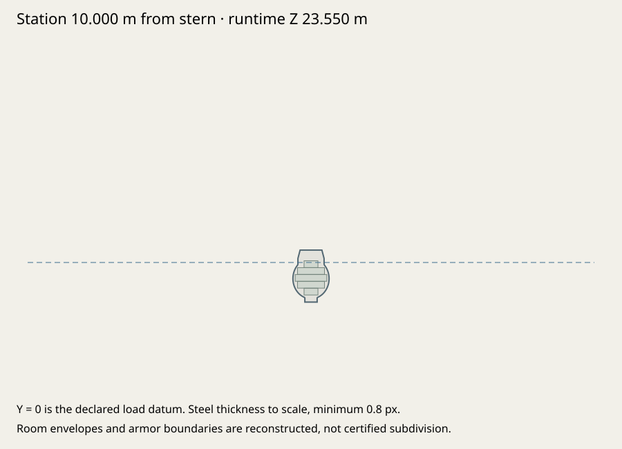
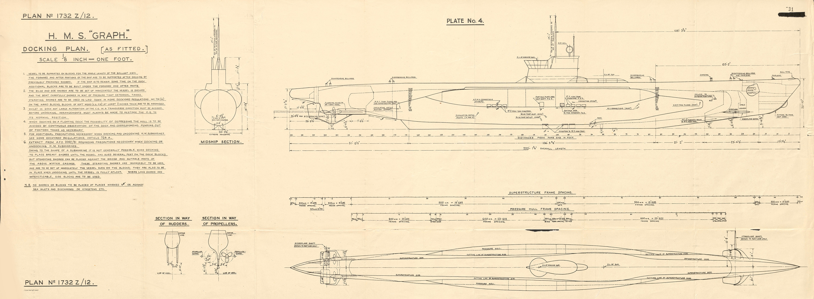
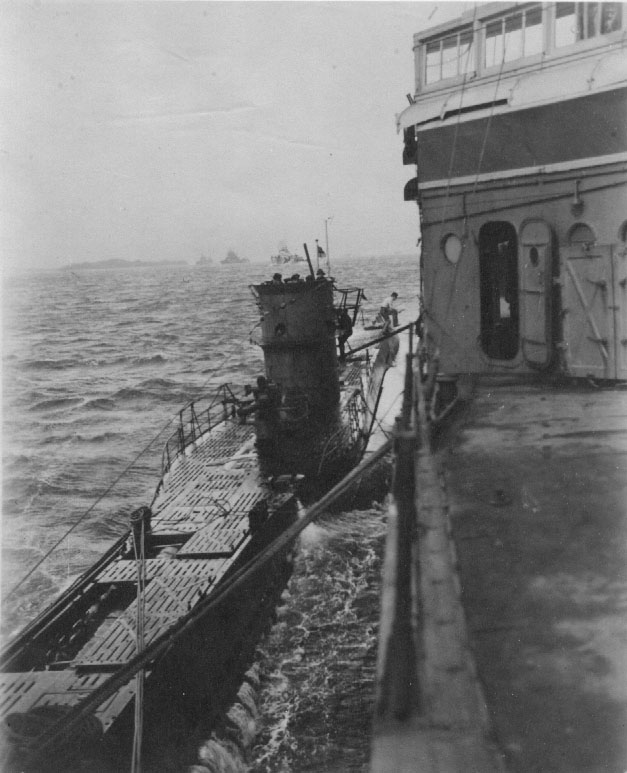
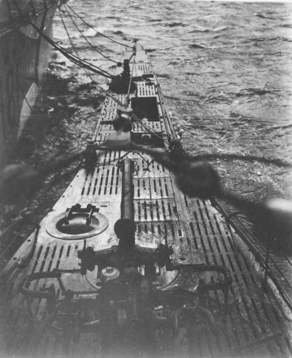

U-570 · Type VIIC fidelity review
U-570 as captured, August–September 1941 · raised periscopes; original reconstruction. The original and revised GLBs use the same twelve fixed cameras. Compare against the retained captured plan with one uniform source scale. Dimensions and landmarks are measured from the actual export.
Build 2ea7b9072cc4 · 80,300 triangles · 41 meshes. Engineering verification is not historical certification.
Identical fixed cameras; no rescaling between authored stages.
Current GLB · 2ea7b9072cc4Preserved original · 8f3d1334a5ff
Dimensions and mounting datums
| Measurement | Exported | Target | Deviation | Build tolerance | Evidence |
|---|
| length | 67.1004 m | 67.1004 m | -0.0000 m | ±0.015 m | u570-docking-plate4 |
|---|
| beam | 6.1532 m | 6.1532 m | +0.0000 m | ±0.015 m | u570-docking-plate4 |
|---|
| draft | 4.7625 m | 4.7625 m | -0.0000 m | ±0.015 m | u570-docking-plate4 |
|---|
| midshipDepth | 5.9817 m | 5.9817 m | -0.0000 m | ±0.015 m | u570-docking-plate4 |
|---|
Actual transformed hull triangles, not accessor bounds. 47,594 hull triangles; 0 nonmanifold edges; 0 degenerate faces. 6 room envelopes fit the loft. All 14 mounting-axis export checks pass. Tolerances check authored datums; source uncertainty remains separate.
Measurements, axes and probes · Modeling specification · Editable blueprint · Export/articulation checks
Hull, protection and provisional spaces

Authored hull and deckhouse surfaces take CPU hits. Exterior armor replaces nearby nominal skin; open hangars stay open. Gunhouse facets move with their original joints. Only hull contacts create sea breaches. Nominal plating, ballistics and flooding capacities are estimates.
midship-skin:
round-bilge: hull
saddle-tank: hull
bridge-wall: conning-tower
free-air: MISS
All twelve registered before/after views
Live game review
Historical runtime evidence · reviewed export 0cdcb80b8790, current export 2ea7b9072cc4. Retained runtime review of the U-570 reconstruction before the carrier airWing compiler extension. The ship geometry and recipe are unchanged; compiler metadata changes the current export hash. These historical screenshots are not relabeled as current-export runtime evidence.
Orca / WebGPU. UI battery firing and reset records are distinct from deliberately seeded structural shots. Canvas-only images omit the HTML HUD; they are direct live renderer captures, not Blender renders. Frame rates were affected by desktop load and tab occlusion; these are functional checks, not a performance certification. Exact-hash runtime records
Historical evidence and unresolved differences
Principal dimensions and the 1941 configuration have primary evidence. Intermediate hull offsets, exact paint, drainage counts, fittings, shutters and internal volumes remain approximations. Scans disagree locally and show different periscope extensions. No historical accuracy percentage or full pressure-hull engineering certification is claimed.
Discrepancy register · Full source register · Raster registrations · Credits

British as-fitted docking plan 1732Z/12: dimensioned circular midsection, saddle shoulders, keel, bridge height, shaft and rudder spacing. Later British fit is not used to add/remove 1941 German deck fittings. · u570-docking-plate4
ONI survey photograph: as-captured bridge, narrow slotted deck and 8.8 cm gun. Photographic perspective is not treated as an orthographic measurement. · u570-photos
ONI survey photograph looking forward: deck stowage covers, loading hatch, narrow rails and deck gun. · u570-photosRestricted local evidence, excluded from this pack
Source records
- oni-u570-1941 — ONI report on U-570, inspected September 23–26, 1941
- u570-general-plan — General arrangement enclosure A to the ONI report
- u570-photos — Photographs accompanying the U-570 survey
- viic-dimensions — Type VIIC characteristics, uboat.net
- g7a-performance — G7a torpedo operating modes
- british-u570-1943 — C.B.4318: British technical report on ex-U-570 / HMS Graph (1943)
- u570-usn-plan — U.S. Navy David Taylor Model Basin redraw/translation of captured U-570 general arrangement
- u570-docking-plate4 — British docking plan 1732Z/12, Plate 4, ex-U-570 as fitted
- u570-interrogation-1941 — British U-570 interrogation, VI: Details of U-570, captured notebook characteristics
- viic-manual-1940 — Type VIIC preliminary information, effective 15 July 1940, propellers
- u570-tank-plans — Captured main-ballast arrangement (Plate 27) and British watertight-compartment plan 1732Z/13
All production geometry and materials independently authored. Historical references are not runtime textures. U.S. Navy / David Taylor Model Basin redraw of captured general arrangement, retained by U-boat Archive; U.S. government archival drawing. Uniform scale from overall stern/bow scan endpoints x350/x4944; waterline inferred from the dimensioned pressure body and casing. Local scan/drawing mismatch approximately 0.15–0.3 m remains visible. Drawing is sectioned internally, has different scope extension, and depicts net cutters explicitly absent on captured U-570. No per-feature fitting or stretching. U.S. Navy / David Taylor Model Basin redraw of captured general arrangement, retained by U-boat Archive; U.S. government archival drawing. Same whole-sheet scale as profile; deck plan centreline y1692. The casing deck, saddle width, AA basket and gun/tower axes can be compared. Image is not stretched independently to force beam agreement. No GameModels3D geometry or attachment data used. Original authoring inputs included; rebuild with the repository shared pipeline. Generated Blender scenes remain under assets.